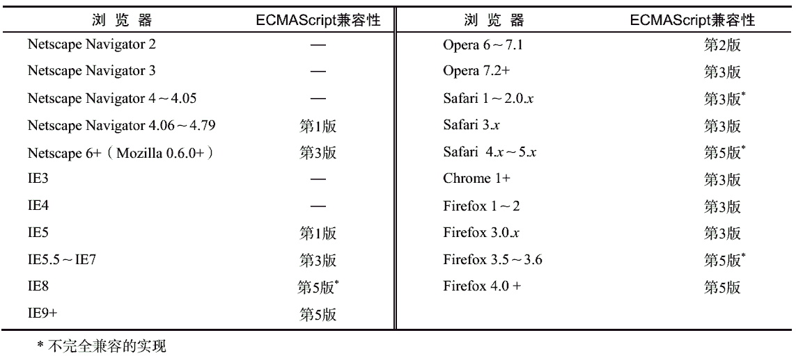
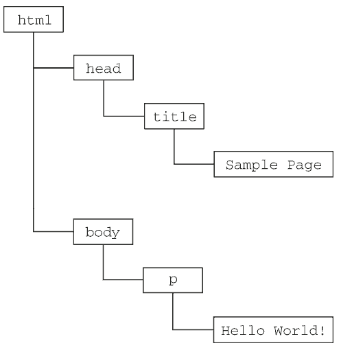
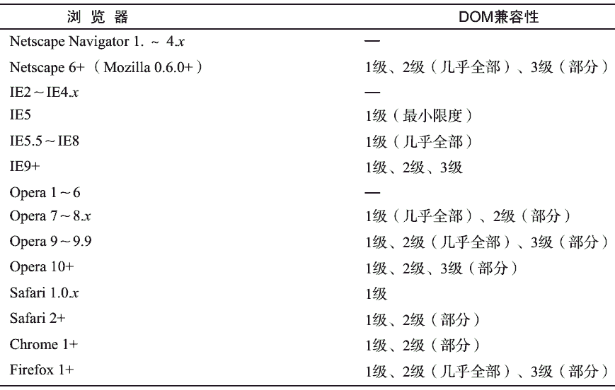

虽然 JavaScript 和 ECMAScript 通常都被人们用来表达相同的含义，但 JavaScript 的含义却比 ECMA-262 中规定的要多得多。没错，一个完整的 JavaScript 实现应该由下列三个不同的部分组成（见图 1-1）。
由 ECMA-262 定义的 ECMAScript 与 Web 浏览器没有依赖关系。实际上，这门语言本身并不包含输入和输出定义。 ECMA-262 定义的只是这门语言的基础，而在此基础之上可以构建更完善的脚本语言。
我们常见的 Web 浏览器只是 ECMAScript 实现可能的宿主环境之一。宿主环境不仅提供基本的ECMAScript 实现，同时也会提供该语言的扩展，以便语言与环境之间对接交互。而这些扩展——如DOM，则利用 ECMAScript 的核心类型和语法提供更多更具体的功能，以便实现针对环境的操作。其他宿主环境包括 Node（一种服务端 JavaScript 平台）和 Adobe Flash。既然 ECMA-262 标准没有参照 Web 浏览器，那它都规定了些什么内容呢？大致说来，它规定了这门语言的下列组成部分:
ECMAScript 的不同版本又称为版次，以第 x 版表示（意即描述特定实现的 ECMA-262 规范的第 x个版本）。 ECMA-262 的最近一版是第 5 版，发布于 2009 年。而 ECMA-262 的第 1 版本质上与 Netscape的 JavaScript 1.1 相同——只不过删除了所有针对浏览器的代码并作了一些较小的改动： ECMA-262 要求支持 Unicode 标准（从而支持多语言开发），而且对象也变成了平台无关的（Netscape JavaScript 1.1 的对象在不同平台中的实现不一样，例如 Date 对象） 。这也是 JavaScript 1.1 和 1.2 与 ECMA-262 第 1 版不一致的主要原因。
ECMA-262 第 2 版主要是编辑加工的结果。这一版中内容的更新是为了与 ISO/IEC-16262 保持严格一致，没有作任何新增、修改或删节处理。因此，一般不使用第 2 版来衡量 ECMAScript 实现的兼容性。ECMA-262 第 3 版才是对该标准第一次真正的修改。修改的内容涉及字符串处理、错误定义和数值输出。这一版还新增了对正则表达式、新控制语句、 try-catch 异常处理的支持，并围绕标准的国际化做出了一些小的修改。从各方面综合来看，第 3 版标志着 ECMAScript 成为了一门真正的编程语言。
ECMA-262 第 4 版对这门语言进行了一次全面的检核修订。由于 JavaScript 在 Web 上日益流行，开发人员纷纷建议修订 ECMAScript，以使其能够满足不断增长的 Web 开发需求。作为回应， ECMA TC39重新召集相关人员共同谋划这门语言的未来。结果，出台后的标准几乎在第 3 版基础上完全定义了一门新语言。第 4 版不仅包含了强类型变量、新语句和新数据结构、真正的类和经典继承，还定义了与数据交互的新方式。
与此同时， TC39 下属的一个小组也提出了一个名为 ECMAScript 3.1 的替代性建议，该建议只对这门语言进行了较少的改进。这个小组认为第 4 版给这门语言带来的跨越太大了。因此，该小组建议对这门语言进行小幅修订，能够在现有 JavaScript 引擎基础上实现。最终， ES3.1 附属委员会获得的支持超过了 TC39，ECMA-262 第 4 版在正式发布前被放弃。
ECMAScript 3.1 成为 ECMA-262 第 5 版，并于 2009 年 12 月 3 日正式发布。第 5 版力求澄清第 3版中已知的歧义并增添了新的功能。新功能包括原生 JSON 对象（用于解析和序列化 JSON 数据）、继承的方法和高级属性定义，另外还包含一种严格模式，对 ECMAScript 引擎解释和执行代码进行了补充说明。
ECMA-262 给出了 ECMAScript 兼容的定义。要想成为 ECMAScript 的实现，则该实现必须做到：
此外，兼容的实现还可以进行下列扩展。
上述要求为兼容实现的开发人员基于 ECMAScript 开发一门新语言提供了广阔的空间和极大的灵活性，这也从另一个侧面说明了 ECMAScript 受开发人员欢迎的原因。
1996 年， Netscape Navigator 3 捆绑发布了 JavaScript 1.1。而相同的 JavaScript 1.1 设计规范随后作为对新标准（ECMA-262）的建议被提交给 Ecma。伴随着 JavaScript 的迅速走红， Netscape 豪情满怀地着手开发 JavaScript 1.2。然而，问题是 Ecma 当时还没有接受 Netscape 的建议。
Netscape Navigator 3 发布后不久，微软也推出了 Internet Explorer 3。微软在 IE 的这一版中捆绑了JScript 1.0，很多人都认为 JScript 1.0 与 JavaScript 1.1 应该是一样的。但是，由于没有文档依据，加之不适当的特性模仿， JScript 1.0 还是很难与 JavaScript 1.1 相提并论。
1997 年，内置 JavaScript 1.2 的 Netscape Navigator 4 发布；而到这一年年底， ECMA-262 第 1 版也被接受并实现了标准化。结果，虽然 ECMAScript 被认为是基于 JavaScript 1.1 制定的，但 JavaScript 1.2与 ECMAScript 的第 1 版并不兼容。
JScript 的升级版是 Internet Explorer 4 中内置的 JScript 3.0（随同微软 IIS 3.0 发布的 JScript 2.0 从来也没有移植到浏览器中）。微软通过媒体大肆宣传 JScript 3.0 是世界上第一个 ECMA 兼容的脚本语言，但当时的 ECMA-262 尚未定稿。于是， JScript 3.0 与 JavaScript 1.2 都遭遇了相同的尴尬局面——谁都没有按照最终的 ECMAScript 标准来实现。
Netscape 决定更新其 JavaScript 实现，即在 Netscape Navigator 4.06 中发布 JavaScript 1.3，从而做到了与 ECMA-262 的第一个版本完全兼容。在 JavaScript 1.3 中， Netscape 增加了对 Unicode 标准的支持，并在保留 JavaScript 1.2 新增特性的同时实现了所有对象的平台中立化。
在 Netscape 以 Mozilla 项目的名义开放其源代码时，预期 JavaScript 1.4 将随同 Netscape Navigator 5一道发布。然而，一个激进的决定，彻底重新设计 Netscape 代码，打乱了原有计划。后来， JavaScript 1.4只发布了针对 Netscape Enterprise Server 的服务器版，而没有内置于 Web 浏览器中。
到了 2008 年，五大主流 Web 浏览器（IE、Firefox、Safari、Chrome 和 Opera）全部做到了与 ECMA-262兼容。 IE8 是第一个着手实现 ECMA-262 第 5 版的浏览器，并在 IE9 中提供了完整的支持。 Firefox 4 也紧随其后做到兼容。下表列出了 ECMAScript 受主流 Web 浏览器支持的情况。
文档对象模型（DOM， Document Object Model）是针对 XML 但经过扩展用于 HTML 的应用程序编程接口（API， Application Programming Interface）。 DOM 把整个页面映射为一个多层节点结构。 HTML或 XML 页面中的每个组成部分都是某种类型的节点，这些节点又包含着不同类型的数据。看下面这个HTML 页面：
<html> <head> <title>Sample Page</title> </head> <body> <p>Hello World!</p> </body> </html>在 DOM 中，这个页面可以通过图 1-2 所示的分层节点图表示。
通过 DOM 创建的这个表示文档的树形图，开发人员获得了控制页面内容和结构的主动权。借助DOM 提供的 API，开发人员可以轻松自如地删除、添加、替换或修改任何节点。
在 Internet Explorer 4 和 Netscape Navigator 4 分别支持的不同形式的 DHTML（Dynamic HTML）基础上，开发人员首次无需重新加载网页，就可以修改其外观和内容了。然而， DHTML 在给 Web 技术发展带来巨大进步的同时，也带来了巨大的问题。由于 Netscape 和微软在开发 DHTML 方面各持己见，过去那个只编写一个 HTML 页面就能够在任何浏览器中运行的时代结束了。
对开发人员而言，如果想继续保持 Web 跨平台的天性，就必须额外多做一些工作。而人们真正担心的是，如果不对 Netscape 和微软加以控制， Web 开发领域就会出现技术上两强割据，浏览器互不兼容的局面。此时，负责制定 Web 通信标准的 W3C（World Wide Web Consortium，万维网联盟）开始着手规划 DOM。
DOM1 级（DOM Level 1）于 1998 年 10 月成为 W3C 的推荐标准。 DOM1 级由两个模块组成： DOM核心（DOM Core）和 DOM HTML。其中， DOM 核心规定的是如何映射基于 XML 的文档结构，以便简化对文档中任意部分的访问和操作。 DOM HTML 模块则在 DOM 核心的基础上加以扩展，添加了针对 HTML 的对象和方法。
请读者注意， DOM 并不只是针对 JavaScript 的，很多别的语言也都实现了 DOM。不过，在 Web 浏览器中，基于 ECMAScript 实现的 DOM 的确已经成为 JavaScript 这门语言的一个重要组成部分。
如果说 DOM1 级的目标主要是映射文档的结构，那么 DOM2 级的目标就要宽泛多了。 DOM2 级在原来 DOM 的基础上又扩充了（DHTML 一直都支持的）鼠标和用户界面事件、范围、遍历（迭代 DOM文档的方法）等细分模块，而且通过对象接口增加了对 CSS（Cascading Style Sheets，层叠样式表）的支持。 DOM1 级中的 DOM 核心模块也经过扩展开始支持 XML 命名空间。
DOM2 级引入了下列新模块，也给出了众多新类型和新接口的定义。
DOM3 级则进一步扩展了 DOM，引入了以统一方式加载和保存文档的方法——在 DOM 加载和保存（DOM Load and Save）模块中定义；新增了验证文档的方法——在 DOM 验证（DOM Validation）模块中定义。 DOM3 级也对 DOM 核心进行了扩展，开始支持 XML 1.0 规范，涉及 XML Infoset、 XPath和 XML Base。
在阅读 DOM 标准的时候，读者可能会看到 DOM0 级（DOM Level 0）的字眼。实际上， DOM0 级标准是不存在的；所谓 DOM0 级只是 DOM 历史坐标中的一个参照点而已。具体说来， DOM0 级指的是 Internet Explorer 4.0 和 Netscape Navigator 4.0 最初支持的 DHTML。
除了 DOM 核心和 DOM HTML 接口之外，另外几种语言还发布了只针对自己的 DOM 标准。下面列出的语言都是基于 XML 的，每种语言的 DOM 标准都添加了与特定语言相关的新方法和新接口：
还有一些语言也开发了自己的 DOM 实现，例如 Mozilla 的 XUL （XML User Interface Language，XML用户界面语言）。但是，只有上面列出的几种语言是 W3C 的推荐标准。
在 DOM 标准出现了一段时间之后， Web 浏览器才开始实现它。微软在 IE5 中首次尝试实现 DOM，但直到 IE5.5 才算是真正支持 DOM1 级。在随后的 IE6 和 IE7 中，微软都没有引入新的 DOM 功能，而到了 IE8 才对以前 DOM 实现中的 bug 进行了修复。
Netscape 直到 Netscape 6（Mozilla 0.6.0）才开始支持 DOM。在 Netscape 7 之后， Mozilla 把开发重心转向了 Firefox 浏览器。 Firefox 3 完全支持 DOM1 级，几乎完全支持 DOM2 级，甚至还支持 DOM3 级的一部分。（Mozilla 开发团队的目标是构建与标准 100%兼容的浏览器，而他们的努力也得到了回报。）
目前，支持 DOM 已经成为浏览器开发商的首要目标，主流浏览器每次发布新版本都会改进对 DOM的支持。下表列出了主流浏览器对 DOM 标准的支持情况。
Internet Explorer 3 和 Netscape Navigator 3 有一个共同的特色，那就是支持可以访问和操作浏览器窗口的浏览器对象模型（BOM， Browser Object Model）。开发人员使用 BOM 可以控制浏览器显示的页面以外的部分。而 BOM 真正与众不同的地方（也是经常会导致问题的地方），还是它作为 JavaScript 实现的一部分但却没有相关的标准。这个问题在 HTML5 中得到了解决， HTML5 致力于把很多 BOM 功能写入正式规范。 HTML5 发布后，很多关于 BOM 的困惑烟消云散。从根本上讲， BOM 只处理浏览器窗口和框架；但人们习惯上也把所有针对浏览器的 JavaScript 扩展算作 BOM 的一部分。下面就是一些这样的扩展：